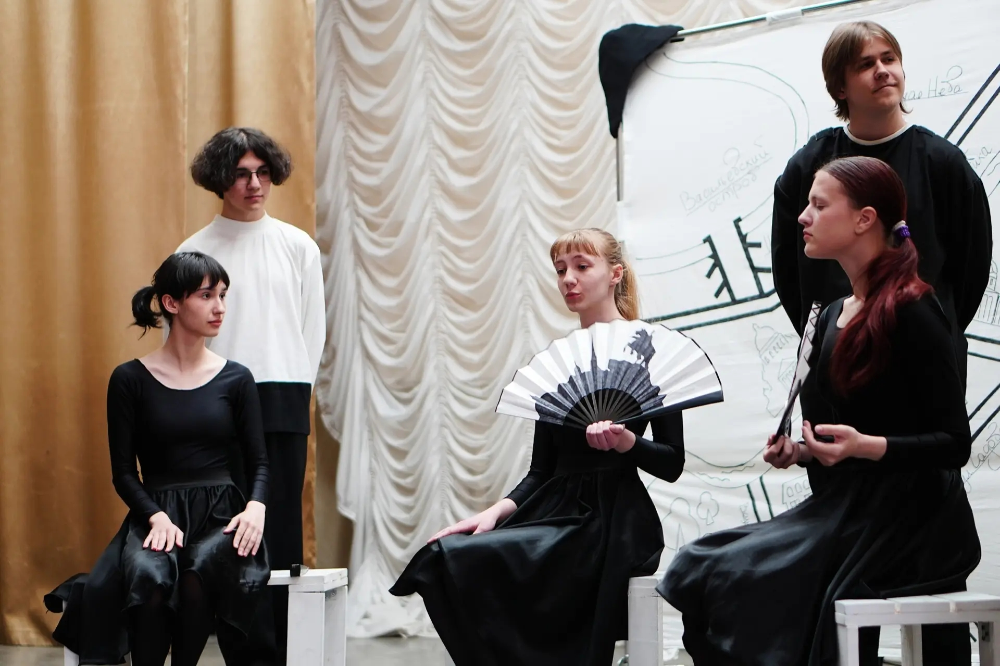

Сюрреалистическая повесть Николая Васильевича Гоголя, поставленная на нашей сцене в 2024 году. Историю о том, как у петербургского майора Ковалёва сбегает собственный нос, мы рассказываем языком пластики, музыки и гротеска.
Спектакль идёт всего 30 минут, но за это время зритель успевает пройти путь от абсурда до глубокого философского размышления о месте человека в мире, где всё потеряло свои очертания.
Режиссёр — Юлия Пирюткина. В главной роли — Евгений Ревоненко.